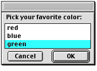
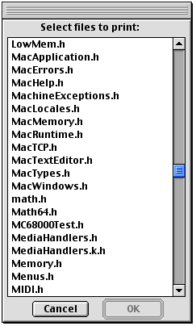

SYNTAX
GetListItem [item1] [item2]… [-c] [-d item] [-m message] [-q] DESCRIPTION The GetListItem tool displays a dialog from which you can select items. To select items in the list, you use the mouse and modifier keys as you would in any dialog. Holding down the Command key while clicking items allows you to select and deselect items. Unless you specify otherwise by using the -s option, you can select more than one item from the list. In addition to the list of items, each dialog contains an OK and Cancel button. If you click the OK button, GetListItem writes the selected items to standard output. If you click the Cancel button instead, GetListItem quits the dialog without writing any output. When running on Mac OS 8 or later, the dialog is a movable-modal dialog. INPUT Standard input, unless you specify the item parameter. OUTPUT Standard output. The selected items are written to standard output when the OK button is clicked. STATUS
GetListItem can return the following status codes:
PARAMETERS item1 [item2]… Lists the specified items in the dialog. If you omit this parameter, GetListItem reads standard input. OPTIONS -c Returns a status code of 0 when Cancel is clicked. -d item Lists the item in the dialog and preselects it. Normally items do not appear selected until you select them manually. Note that you can specify this option more than once to preselect several items in the list. -m message Displays your message above the list of items. -q Inhibits placing quotation marks around items in the output. Normally GetListItem places quotation marks around items containing spaces or special characters. -r rows Writes the output items in the specified number of rows unless the number of items listed as parameters is less than the number of rows. There cannot be less than three rows in the display despite the rows parameter. -s Allows only a single item to be selected from the displayed list. In single- selection mode, GetListItem behaves very much like the list in standard file dialogs--the arrow keys move the selection, and keystroke matching is performed. -sort Sorts the list alphabetically. -t[itle] title Displays the specified title in the title bar of the movable-modal dialog window when running on Mac OS 8 or later. -w width Specifies the width (in pixels) of the list dialog.
Note EXAMPLES In this example, the command line GetListItem red blue -d green -m "Pick your favorite color:" displays the dialog box shown below, which has a list of three colors.  By piping a list of the files in the {CIncludes} directory to GetListItem for input, the command line Print `Files {CIncludes} | GetListItem -r 20 -m "Select files to print:"` lists the files in the {CIncludes} directory and prints those selected by the user, as shown below.  LIMITATIONS The GetListItem tool cannot handle a list greater than 32 KB characters.
|